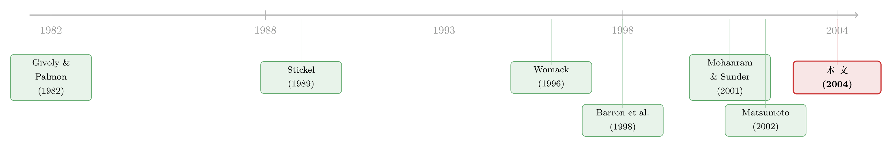

财报前夜，分析师只把「好消息」提前漏了出来
本文读的是 Ivković & Jegadeesh (2004, JFE)：他们把分析师的盈余预测修正和评级调整，按「距离下一个盈余公告还有多少个交易日」摆在一条事件时间轴上，问的是——这些修正在什么时候最值钱？答案出人意料地干净：刚发完财报的那一周，修正几乎不含信息；越往后越值钱；而到了财报发布前的最后一周，上调预测和上调评级的信息含量陡然飙升——可下调那一侧却没有这种跳升。一边漏、一边不漏的这种不对称，恰恰是「分析师提前拿到了内部消息、而且只拿到了好消息」的指纹。
1 一个被问了很多年的老问题：分析师的价值，到底从哪来？
华尔街每年要花掉投资者数以百万计的美元，去买 First Call、I/B/E/S、Zacks 这些数据商手里的分析师预测和评级。市场显然愿意为分析师的研究买单。可一个朴素的问题始终悬在那里：这笔钱，到底买的是什么？
粗略地说，分析师能创造价值，无非两条路。第一条，他们擅长解读公开信息——比如一份季报出来，普通投资者只看到一行净利润，分析师却能看穿其中的盈余操纵、读懂这些数字对长期价值的含义。第二条，他们能独立去搜集那些市场拿不到的信息——跟踪百货公司就去数商场客流、看库存折价，甚至直接从被覆盖公司的管理层那里「打听」。
这两条路听上去都对。但问题在于，它们无法靠看一份研报本身区分开：你拿到一个「上调」，并不知道分析师是因为想通了上一份财报，还是因为打听到了别的什么。
于是 Ivković 和 Jegadeesh 想到了一个巧妙的办法——不看修正的内容，看修正的时机。
2 把「时机」变成一把尺子
这是全文最关键的一步。
设想一下：如果分析师的本事主要是「解读刚公布的财报」，那他们的预测就应该在盈余公告日（earnings announcement date, EAD）刚过的那几天最有信息含量——因为财报刚出来，正是需要解读的时候，市场对这些修正的反应也该最强。
可如果分析师的本事主要是「独立搜集市场拿不到的信息」，那情况就反过来了：刚发完财报的那一周，公开信息最充分，分析师反而没什么独家可言；他们的价值应该体现在远离财报公告的那些日子里。
还有第三种可能，也是本文真正盯着的那一种。管理层可以在任何时点向分析师提供「业绩指引」，但这种指引在财报发布前的最后一两周最准——因为这时候季度财务报表内部已经基本编完，管理层心里清清楚楚那条底线数字是多少。如果分析师能提前接触到这种信息，那么他们的预测在财报前夜就会突然变得格外灵验。
换句话说，三种价值来源，对应着事件时间轴上三个不同的「峰值位置」：财报后（解读公开信息）、远离财报（独立调研）、财报前夜（提前拿到内部数字）。看修正的信息含量在事件时间上的形状，就能反推它的来源。这一招的漂亮之处，在于它把一个看不见的「信息来源」问题，翻译成了一个看得见的「时间分布」问题。
这个想法之所以在 2004 年格外有分量，是因为它正好踩在一个监管热点上。2000 年 10 月 23 日，美国 SEC 通过了著名的 公平披露规则（Regulation Fair Disclosure, Reg FD），明令禁止上市公司向少数分析师「选择性披露」重大信息。本文要做的，正是去检验：在数据里，是否存在分析师提前接触内部信息的初步证据（prima facie evidence）。
3 一个简单的模型：把价格反应写成「相对精度」
为了给上面的直觉一个框架，作者搭了一个非常轻巧的模型。它轻到可以用四个等式讲完，但每一步都不多余。
第一步，把任意时点 \(t\) 的股价拆成两块：
$$P_t = PF_t + Z_t$$
其中 \(PF_t\) 是「完美预见（perfect foresight）」价格——假如市场确知未来所有现金流，价格就该是它。现实里没有完美预见，于是真实价格偏离 \(PF_t\)，偏离量 \(Z_t\) 就是定价误差（pricing error）。注意，这个误差来自「看不清未来」，不是市场非理性。
第二步，把定价误差再拆一刀：
$$Z_t = e_t + u_t$$
\(e_t\) 是「对下一季度盈余看不清」带来的那部分误差，\(u_t\) 则是与下一季度盈余正交的、关于更远期现金流的那部分。作者假设 \(e_t\) 服从正态分布；因为它是一个理性预测误差，均值为零，于是 \(e_t \sim N(0,\sigma_e^2(t))\)。这里方差写成时间的函数 \(\sigma_e^2(t)\)，是因为越接近 EAD，市场对当季盈余看得越清，这个方差会随之收窄。
第三步，分析师在 \(t\) 时刻修正了预测。设 \(y_t\) 是这次修正所传递的「价值相关信息」（注意不是预测数字本身）。由于预测也有误差，\(y_t\) 只是关于 \(e_t\) 的一个带噪信号：
$$y_t = e_t + \xi_t,\qquad \xi_t \sim N(0,\sigma_\xi^2(t))$$
\(\xi_t\) 是分析师那一侧的噪声，同样均值为零。
第四步，也是核心。既然 \(e_t\) 和 \(\xi_t\) 都是正态的，市场看到修正后会理性地贝叶斯更新，于是修正引起的价格变化是：
$$\Delta P_t \equiv (P^{new}\mid y_t) - P_t = y_t\left[\frac{1}{1+\sigma_\xi^2(t)/\sigma_e^2(t)}\right]$$
把这一步翻译成大白话——价格对一次预测修正的反应，等于这次修正的信息量 \(y_t\)，乘上一个介于 0 和 1 之间的权重。这个权重由一个比值决定：
作者把这个比值
$$\text{AIR} \equiv \frac{\sigma_e^2(t)}{\sigma_\xi^2(t)}$$
称为分析师信息比率（analyst information ratio, AIR）。它衡量的是「分析师信号的精度」相对于「修正前市场信息的精度」之比。AIR 越大，价格对修正的反应越强——而 AIR 之所以可能很大，要么是因为市场本身很不知情（\(\sigma_e^2\) 大），要么是因为分析师手里的信息特别精确（\(\sigma_\xi^2\) 小）。
模型推到这里，那把「尺子」就磨好了：只要观察价格对修正的反应在事件时间上的形状，就能反推 AIR 的形状，进而反推分析师的相对信息优势是在什么时候出现的。 关键的一点是，市场和分析师两边的信息都会随着季度推进而变精确，但 Eq.(4) 关心的是它们的比值，因此能干净地把「相对优势」单独拎出来。
作者特意把自己的模型和 Mohanram & Sunder (2001) 基于 Barron et al. (1998) 的做法做了对比。Barron 模型有两个在这里致命的假设：一是用「一致预期（consensus forecast）」当作市场信息的代理，可一致预期既可能过时、又远不能涵盖市场的全部信息源；二是假设所有分析师同时发布预测、互不观察。但现实里分析师是顺序出手的，后出手的人能看到前面所有人的预测并理性地利用它们。作者证明：一旦允许第二轮修正，分析师预测的离散度会精确地坍缩到零，于是 Barron 那个依赖「预测离散度」的精度度量就失效了。本文的模型则绕开了这些强假设。
4 数据与三组检验
数据来自三处：分析师的盈余预测取自 I/B/E/S 明细文件，覆盖 1990 年 1 月至 2002 年 3 月；评级数据则从 1993 年 11 月起；盈余公告日（EAD）来自 COMPUSTAT 季度文件；股票收益取自 CRSP。观察单位是「单个分析师的一次修正」。样本期内分析师覆盖的公司数从 1990 年代初的约 3,200 家翻倍到 1998 年的 6,000 多家，2001 年又回落到不足 5,000 家——分析师在信息传播中的角色，肉眼可见地越来越重。
时间轴的设计本身值得一提。作者把每次修正按「距离下一个 EAD 多少个交易日」编号，覆盖 \(t=-30,\dots,-1,0(=\text{EAD}),+1,\dots,+32\) 这条约 63 个交易日的窗口（两次盈余公告之间平均正是 63 个交易日）。$-30$ 到 $-1$ 的修正针对的是即将公告的那个季度，\(0\) 到 $+32$ 的修正则针对下一个季度。
先看频率。样本期内分析师共发出 538,065 次季度盈余预测修正，其中上调 190,903 次、下调 333,969 次、重申 13,193 次——下调远多于上调，这与文献里反复记录的分析师「乐观偏误（optimism bias）」一致（O'Brien, 1998；Klein, 1990）：分析师早期预测偏乐观，之后逐步往下修。评级则共有 116,078 次变动，其中上调 42,971、下调 53,542、重申 19,565。
另一个醒目的事实是修正高度扎堆在 EAD 附近：超过四分之一（26.35%）的预测修正发生在 EAD 当天及随后两天；评级修正的扎堆程度稍弱，同一窗口约占 20%。其余日子里，修正大致均匀地以每天 1.1%–1.4% 的速度流出。
在这个时间轴上，作者跑了三组互相印证的检验。
第一组：相对预测误差。 对每一次修正，作者算「这位分析师新修正后预测误差的绝对值」减去「修正前一天一致预期误差的绝对值」——这就是相对预测误差（relative forecast error），衡量这位分析师比「市场共识」精确多少。结果：在上一季度财报刚公告后的那段时间，这个相对误差接近于零——分析师并不比共识更准；可在财报公告前的那段时间，做修正的分析师显著比共识更精确。这说明，分析师的精度优势恰恰出现在财报前夜，而非财报刚出之后。
第二组：价格对预测修正的反应。 把价格反应摆到同一条时间轴上，形状几乎复刻了相对预测误差：财报刚过的那一周，反应最弱；越往后越强。
第三组：价格对评级上调/下调的反应。 评级本该综合远比单季盈余更广的信息，但它的价格反应形状，竟然和盈余预测修正如出一辙。
三组检验，指向同一个故事。可故事真正的转折，藏在「上调」和「下调」的分裂里。
5 反转：好消息漏了，坏消息没漏
把样本拆成上调和下调两半，图景立刻变得不对称。
对上调预测而言，相对预测误差从上一季度的 EAD 起几乎单调下降，到财报前的最后一周出现一次陡降；对应地，价格反应也在财报前最后一周急剧放大。换句话说，临近财报，上调预测变得格外精确、也格外被市场看重。
可对下调预测，故事到此戛然而止：相对误差一路下降到 EAD 前两周，然后在最后两周里反而回升；价格反应也在最后两周转弱。评级的上调/下调，重复了同样的分裂——上调在财报前夜放量增值，下调没有。
这个不对称才是全文的灵魂。如果分析师只是单纯地「越临近财报越能算准」，那上调和下调应该对称地一起变准。可数据说：临近财报变得更灵的，只有好消息那一侧。
为什么偏偏是好消息？作者给的解释直指选择性披露的动机不对称。Brown (2001) 论证，管理层与分析师沟通的意愿，取决于公司是报盈还是报亏。而出于「拖延坏消息」的天性、或是面对坏消息时的诉讼顾虑，内部人更愿意在有好消息时给分析师「提前看一眼」，却在坏消息面前守口如瓶——这一点与更早的 Chambers & Penman (1984)、Givoly & Palmon (1982) 记录的「业绩不及预期时倾向于推迟发布财报」彼此呼应。
于是反转落地：分析师之所以在财报前夜对好消息格外精准、且这种精准被市场认账，最自然的解释是他们提前接触到了管理层关于好业绩的内部数字——而坏业绩没有这条通道。这正是 Reg FD 想要堵上的那个口子。
（关于「监管关上正门、信息却从侧门漏出」的同类证据，可参见《监管关上了一扇门，却忘了锁上评级机构那扇窗》；而关于「财报还没发、知情者已经先动手」的另一类直接证据，可参见《报告还没发，他们已经先买了五天——研报里那条「通风报信」的暗线》 与《财报还没发，机构已经站好了队——一份非公开成交簿里的「知情」证据》。）
6 文献脉络
把这篇论文放回它的坐标系里，能看清它接的是哪几条线。
最上游，是会计文献对「盈余公告及时性」的关注：Givoly & Palmon (1982) 与 Chambers & Penman (1984) 发现，公司在业绩不佳时倾向推迟披露——这为「坏消息被拖、好消息先漏」的不对称埋下了第一颗种子；Skinner (1994) 则从另一面论证了公司为何有时又会主动披露坏消息。
接着，是分析师研究本身的两条支线。一条关心评级与预测的价值：Womack (1996) 证明经纪商分析师的推荐确实有投资价值，Barber et al. (2001) 与 Jegadeesh et al. (2004) 进一步刻画了评级的信息含量与「何时才增值」。另一条关心预测的时机与精度：Stickel (1989) 研究了中期盈余披露附近的预测时机，Kang et al. (1994)、Lim (2001)、Bernhardt & Campello (2002) 则一致发现，越临近 EAD 的预测误差越小。
然后，「业绩引导」这一支浮出水面：Bartov et al. (2002)、Matsumoto (2002)、Richardson et al. (2003) 提出，管理层会在财报前一个月左右有意把分析师的预期往下引，好让公司随后「达到或超出」共识、避免负面盈余意外——这恰好解释了本文里下调远多于上调的事实。

度量层面，Barron et al. (1998) 给出了用预测离散度刻画分析师信息环境的经典框架，Mohanram & Sunder (2001) 把它用到 Reg FD 的检验上。本文站在这条线的末端，提出一个不依赖「同时发布」假设、也不把一致预期当唯一市场信息代理的替代框架，并用「事件时间里的价格反应形状」这把新尺子，把分析师价值的来源——尤其是「财报前夜的好消息泄漏」——给量了出来。
（关于「分析师如何在私人信息与公开信息之间配权重」的相关讨论，可参见《分析师到底该信「自己」几分？——一道把「私心」和「自负」分开的算术》；关于「一字一句拆开研报到底写了什么」，可参见《拆开一份研报：当「分析师写了什么」终于被一字一句地数清楚》。）
7 评论与延伸（Q&A + 研究方向）
(a) 几个可能的疑问
Q：「财报前夜上调更准」会不会只是因为越临近财报、信息天然越充分，根本不需要扯到内部泄漏？
单看「更准」确实可以这么解释——市场和分析师两边的信息都在随季度推进而变精确。但本文的识别落在不对称上：如果只是「时间临近 → 信息变多」，上调和下调应该对称地一起变准。可数据里临近财报变灵的只有上调，下调反而在最后两周走弱。一个对称的「信息随时间增加」机制无法产生这种单边的跳升，这才是把矛头指向「选择性披露好消息」的关键。
Q：模型里把定价误差 \(Z_t\) 说成来自「缺乏完美预见」而非「市场非理性」，这个区分重要吗？
很重要。它让整套推导可以建立在「市场是贝叶斯理性的」之上：价格对修正的反应 Eq.(4) 是理性更新的结果，权重由相对精度 AIR 决定。这样作者就不需要援引任何行为偏差，结论纯粹来自信息结构。反过来说，如果你认为市场会对分析师修正系统性地过度/反应不足，那这套「价格反应 = AIR」的映射就要打折扣——这也是它最脆弱的假设之一。
Q：本文和 Mohanram & Sunder (2001) 都想度量分析师的相对信息精度，差别到底在哪？
Mohanram & Sunder 用的是 Barron et al. (1998) 框架，其核心度量是分析师预测的离散度，且依赖「所有分析师同时、独立发布预测」这个假设。本文指出：现实中分析师顺序出手、能看到彼此的预测，一旦允许第二轮修正，预测离散度会理论上坍缩到零，使得基于离散度的精度度量失去意义。本文改用「事件时间里的价格反应」做度量，绕开了这个假设。
Q：下调远多于上调（333,969 vs 190,903），这本身会不会污染结论？
数量不对称来自分析师的乐观偏误（早期偏乐观、随后往下修）和管理层的「向下引导」，本身是已知事实，不直接污染识别——因为本文比较的是上调/下调各自在事件时间上的形状，而非两者的绝对数量。不过它提醒我们：下调那一侧混杂了大量「机械性地修正早先乐观预测」的修正，这类修正信息含量本就低，可能压低了下调侧的整体价格反应。
Q：评级（recommendation）综合了远比单季盈余更广的信息，为什么它的价格反应形状会和盈余预测修正一模一样？
这恰恰是个耐人寻味的发现。如果评级主要由长期、独立的研究驱动，它的时间形状本不该跟着「单季盈余的事件时钟」走。可它走了——上调在财报前夜放量增值、下调没有。这暗示：至少有相当一部分评级调整，其触发点和盈余预测修正共享同一个信息源（很可能就是临近财报的内部业绩信息），而非纯粹的独立长期研究。
Q：样本期跨越了 2000 年 10 月的 Reg FD，本文有没有直接做「Reg FD 前后对比」？
本文的主线是用整个样本刻画「事件时间形状」，并把这种形状作为「存在早期信息接触」的初步证据，而非围绕 Reg FD 生效日做断点式的前后对比。这也正是它留给后人的最大延伸空间——把这套「事件时间 × 上调/下调」的度量切到 Reg FD 前后，去看那道「财报前夜的好消息跳升」是否真的被监管熨平。
(b) 几个可能的研究问题与提案
1. 用本文的「事件时间不对称」做 Reg FD 的干净断点检验。
【经济故事】本文给出的是泄漏的「指纹」，却没直接证明 Reg FD 抹掉了它。如果选择性披露是真因，那么 2000 年 10 月之后，「上调预测/评级在财报前夜的信息含量跳升」应当显著收窄，而下调侧不变。 【可行性】高。所需数据（I/B/E/S、COMPUSTAT、CRSP）本文都用了，只需把样本切成 Reg FD 前后两段，对「财报前一周上调侧的价格反应」做差分。识别上需小心 2001 年市场环境与分析师覆盖收缩带来的混淆，可用「下调侧」作为同期对照。
2. 把这套尺子搬到公司债与信用市场。
【经济故事】盈余对债券持有人同样是核心信息（违约概率、契约触发），但债券投资者更关心坏消息。如果坏消息的选择性披露动机与股票市场相反（债权人对下行更敏感、管理层也更可能对大债主先行沟通），那么在公司债市场，「财报前夜的信息跳升」可能出现在下调一侧——与本文恰好镜像。 【可行性】中。需要 TRACE 债券成交数据匹配 EAD 与分析师/评级机构的修正时点；难点在于债券流动性低、成交稀疏，事件时间窗口里很多债券根本没有干净的价格，需用规模自适应的流动性度量或信用利差变动替代收益。
3. 外资持有人是否被排在「选择性披露」的队尾？
【经济故事】如果好消息确实在财报前夜从管理层漏向部分分析师，那么不同投资者获取这条信息的速度可能取决于其与公司的「距离」。外资机构通常信息劣势更明显，他们对「财报前夜上调」的反应是否更慢、交易是否更靠后？这能把「选择性披露」与「投资者异质性」两条线接起来。 【可行性】中。需要带投资者类型标签的成交/持仓数据（如某些市场的逐笔归属数据），把外资与本土机构在事件时间里的下单时点对齐。识别可行，但高质量的分投资者类型数据较难获得。
4. 「向下引导」与「财报前好消息泄漏」能否在同一框架里共存？
【经济故事】Matsumoto (2002)、Richardson et al. (2003) 说管理层在财报前把预期往下引以便事后「超预期」；本文却说好消息在财报前夜往上漏。这两件事看似矛盾，实则可能是同一套管理层信息策略的两面：先压低公开共识、再对选定分析师私下放出真实的好数字。能否建一个统一模型，让「公开向下引导 + 私下向上泄漏」成为均衡策略？ 【可行性】中到高（偏理论）。可在本文的信号框架上加入管理层的策略性披露选择与诉讼成本，刻画好/坏消息下的分离均衡；实证检验则需同时观测「公开共识的漂移」与「私下修正的精度」，数据上有挑战但并非不可能。
8 我的判断与参考文献
贡献。 这篇论文最漂亮的地方，是把一个看不见的问题——「分析师的价值从哪来」——转化成一个看得见的、可度量的「事件时间分布」问题，再用一个极简但自洽的贝叶斯模型把「价格反应 = 相对信息精度（AIR）」这层映射讲清楚。它不需要任何行为偏差假设，就从「上调在财报前夜放量增值、下调没有」这条单边不对称里，读出了「选择性披露好消息」的指纹。在 Reg FD 落地之初，这是极有分量的一份初步证据。
对识别的担忧。 我有两点不安。其一，整套结论建立在「市场对分析师修正是贝叶斯理性反应」之上——一旦市场对修正存在系统性的过度或反应不足，「价格反应即 AIR」这层映射就会被污染，而我们恰恰知道分析师修正常伴随漂移（drift）和反应不足。其二，本文用整段样本刻画形状、把它当作泄漏证据，却没有围绕 Reg FD 生效日做断点式的前后对比；「财报前夜的好消息跳升」是否真由选择性披露驱动、又是否真的被 Reg FD 熨平，本文只给了「prima facie」，没给「确凿」。
后续想看到什么。 最自然的一步，就是上文研究方向里的第一条——把这套「事件时间 × 上调/下调」的度量切到 Reg FD 前后，看那道好消息的跳升有没有被监管抹平。如果抹平了，本文的因果故事就被坐实；如果没抹平，那才是更耐人寻味的问题：监管究竟堵住了正门，还是只是把泄漏赶进了更隐蔽的侧门。
参考文献
Barber, B., Lehavy, R., McNichols, M., Trueman, B. (2001). Can investors profit from the prophets? Security analyst recommendations and stock returns. Journal of Finance 56, 531–563.
Barron, O.E., Kim, O., Lim, S.C., Stevens, D.E. (1998). Using analysts' forecasts to measure properties of analysts' information environment. Accounting Review 73, 421–433.
Bartov, E., Givoly, D., Hayn, C. (2002). The rewards to meeting or beating earnings expectations. Journal of Accounting and Economics 33, 173–204.
Bernhardt, D., Campello, M. (2002). The dynamics of earnings forecast management. Working paper, University of Illinois, Urbana-Champaign.
Brown, L.D. (2001). A temporal analysis of earnings surprises: profits versus losses. Journal of Accounting Research 39, 221–241.
Chambers, A.E., Penman, S.H. (1984). Timeliness of reporting and the stock price reaction to earnings announcements. Journal of Accounting Research 22, 21–47.
Givoly, D., Palmon, D. (1982). Timeliness of annual earnings announcements. Accounting Review 57, 486–508.
Jegadeesh, N., Kim, J., Krische, S.D., Lee, C.M.C. (2004). Analyzing the analysts: when do recommendations add value? Journal of Finance 59, 1083–1124.
Kang, S.H., O'Brien, J., Sivaramakrishnan, K. (1994). Analysts' interim earnings forecasts: evidence on the forecasting process. Journal of Accounting Research 32, 103–112.
Klein, A. (1990). A direct test of the cognitive bias theory of share price reversals. Journal of Accounting and Economics 13, 155–166.
Lim, T. (2001). Rationality and analysts' forecast bias. Journal of Finance 56, 369–385.
Matsumoto, D.A. (2002). Management's incentives to avoid negative earnings surprises. Accounting Review 77, 483–514.
Mohanram, P.S., Sunder, S.V. (2001). Has Regulation Fair Disclosure affected financial analysts' ability to forecast earnings? Working paper, New York University.
O'Brien, P.C. (1998). Analysts' forecasts as earnings expectations. Journal of Accounting and Economics 10, 53–83.
Richardson, S., Teoh, S.H., Wysocki, P. (2003). The walk-down to beatable analyst forecasts: the roles of equity issuance and insider trading incentives. Working paper, MIT.
Skinner, D.J. (1994). Why firms voluntarily disclose bad news. Journal of Accounting Research 32, 38–60.
Stickel, S.E. (1989). The timing of and incentives for annual earnings forecasts near interim earnings announcements. Journal of Accounting and Economics 11, 275–292.
Womack, K.L. (1996). Do brokerage analysts' recommendations have investment value? Journal of Finance 51, 137–167.
Ivković, Z., Jegadeesh, N. (2004). The timing and value of forecast and recommendation revisions. Journal of Financial Economics 73(3), 433–463.